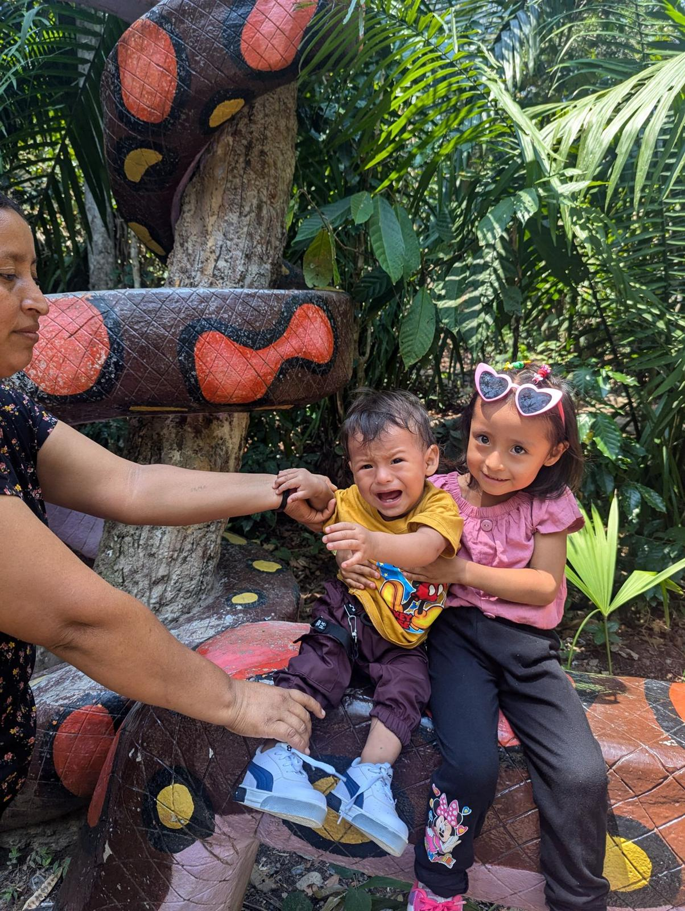

About me
Hi, I'm Lucas.
I live on my own land about 3.5 km outside Lamas, in San Martín. I'm a US and Peruvian citizen, I've lived in Peru since 2021, and I help people abroad buy property here the way I wish someone had helped me. When I'm not walking land, I work as a healthcare IT consultant.

A promise to a starfruit tree
In 2018 I came to Peru planning to travel all of South America. I stayed four months, and spent one of them in a rented house in the jungle near Pueblo Pardo, waking up to parrots and a starfruit tree outside the window. I promised myself I'd come back and build a place in the jungle.
At the end of 2020, in the middle of the pandemic, I moved to Lima. I stayed about three and a half years, getting to know the city, travelling around, and learning how the country works. But I'd always wanted the jungle: the biodiversity, the slower pace, the chance to grow my own garden.
My other job
Since around 2012 I've worked as an independent healthcare IT consultant, helping hospitals across the US with the software their doctors and nurses use every day, and training staff on new systems.
For a long time that meant living out of a suitcase and flying to hospitals for on-site work. When the pandemic made the job remote, I could finally work from anywhere, and that's what made Peru possible. I still consult today, which is why one or two trusted local helpers join me on property visits.
The two jobs have more in common than you'd think. Hospital software is all checklists, double-checks and paper trails, because a missed detail matters. I bring the same habits to your purchase: every title checked, every document shared, nothing assumed.
The land I could barely see
In 2021 I looked at six or seven properties over two weekends. I met the seller at the Plaza del Wayku (local indigenous community) in Lamas, and he took me out to the end of a bumpy dirt road. The land had sat untended for years, and he had to cut the borders with a machete just so I could see where it ended. I couldn't tell if it had a view. But it was full of mangoes, bananas, zapote, noni and caimito.


It was sold as having electricity. The cables were run and the meters were on the post, but it was a government project that had been on hold since 2017 and still wasn't finished years later. That's why I always
verify what works, not what looks finished.
A second family
The part I didn't see coming was the people. The local family who had helped care for the land over the years were the ones who first showed it to me, and they never really left. They still help me with the property, and somewhere along the way they became a second family. Their daughter is my goddaughter.
When you buy land in a small place like this, you're stepping into a community. Treat people well, and it changes everything about what the place becomes.

What it became
That overgrown lot is now a small campus. I've built a house, a pool, a chicken coop, a woodshop and an outdoor kitchen and barbecue area, all running on my own solar setup: ten 680-watt panels, an inverter and a lithium battery. I've since bought more land too, including the neighbor's plot next door and 34 hectares (84 acres) of raw land for a future homestead (for under $10,000!)


Why work with me
What I bring to your purchase
I live here
Not a visiting agent. I'm on my own land outside Lamas every day, and I've been through the purchase, the surprises and the building myself.
I belong here
A US and Peruvian citizen who speaks Spanish and is already the trusted neighbor. That's where the deals that never hit a website come from.
I'll tell you the truth
Infrastructure isn't perfect, water lines break, and promises turn out half-finished. I'd rather tell you now than have you find out later.
Read the whole story
The machete, the electricity that wasn't, and everything I'd do differently. It's the best way to get to know how I think about buying land here.

Want to see my place on a video call?
I'm happy to show you my own property, answer your questions, and tell you honestly whether buying here makes sense for you.
Or email me directly:
info [at] buylandinperu.com